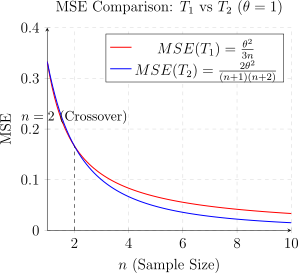

2.5 Properties of Estimators
Several properties of estimators are desirable: unbiasedness, small variance or mean squared error, sufficiency, efficiency and consistency.
Sufficiency
Does a statistic contain all the information in the sample about the parameter? The concept of sufficiency makes the question precise.
Definition 2.5.1. Let \(X_1, \dots , X_n\) be a random sample from \(f(x;\theta )\). A statistic \(T\) is sufficient for \(\theta \) if the conditional distribution of \(X_1, \dots , X_n\) given \(T = t\) does not depend on \(\theta \).
Once \(T\) is known, the remaining detail of the sample has a distribution that is the same whatever \(\theta \) is, and so carries no further information about it. For discrete variables, when \(T(\mathbf x) = t\) the conditional p.f. is \[P(\mathbf X = \mathbf x\mid T = t) = \frac {\prod _{i=1}^nf(x_i;\theta )}{f_T(t; \theta )} ,\] and sufficiency means this ratio is free of \(\theta \).
Example 2.5.2. Let \(X_1, \dots , X_n\) be a random sample from the Bernoulli distribution with \(P(X = 1) = \theta \). Verify that \(T = \sum ^n_{i = 1}X_i\) is sufficient for \(\theta \).
Solution. The joint p.f. is \(\prod \theta ^{x_i}(1 - \theta )^{1 - x_i} = \theta ^t(1 - \theta )^{n - t}\), where \(t = \sum x_i\), and \(T\sim \text {BIN}(n,\theta )\). So, for any \(\mathbf x\) with \(\sum x_i = t\), \[P(\mathbf X = \mathbf x\mid T = t) = \frac {\theta ^t\, (1 - \theta )^{n - t}}{\binom {n}{t}\theta ^t\, (1 - \theta )^{n - t}} = \frac {1}{\binom {n}{t}} ,\] which does not depend on \(\theta \). Given the number of successes, every arrangement of them is equally likely, whatever the success probability.
Checking the definition directly requires the distribution of \(T\). The following theorem avoids that.
Theorem 2.5.3 (Factorisation theorem). Let \(X_1, \dots , X_n\) be a random sample from \(f(x;\theta )\). Statistics \(T_1,\dots ,T_k\) are jointly sufficient for \(\theta \) if and only if the likelihood factors as \[L(\theta ) = \prod _{i=1}^nf(x_i;\theta ) = g(t_1, \dots , t_k;\theta )\,h(x_1, \dots , x_n)\] for all \(\mathbf x\) and \(\theta \), where \(g\) depends on the data only through \(t_j = T_j(\mathbf x)\), and \(h\geq 0\) does not involve \(\theta \). With \(k = 1\) this is the condition for a single sufficient statistic.
Proof in the discrete case, \(k = 1\). If \(T\) is sufficient, then \(P(\mathbf X = \mathbf x) = P(T = t)\,P(\mathbf X = \mathbf x\mid T = t)\), the first factor depending on \(\theta \) and \(t\) only and the second on \(\mathbf x\) only; this is the factorisation. Conversely, if the factorisation holds, then \(P(T = t) = \sum _{\mathbf y : T(\mathbf y) = t}g(t;\theta )h(\mathbf y) = g(t;\theta )\sum _{\mathbf y : T(\mathbf y) = t}h(\mathbf y)\), so \[P(\mathbf X = \mathbf x\mid T = t) = \frac {g(t;\theta )h(\mathbf x)}{g(t;\theta )\sum _{T(\mathbf y) = t}h(\mathbf y)} = \frac {h(\mathbf x)}{\sum _{T(\mathbf y) = t}h(\mathbf y)} ,\] which is free of \(\theta \). □
- 1.
- The M.L. estimator is a function of any sufficient statistic, since the likelihood depends on \(\theta \) only through \(g(t;\theta )\).
- 2.
- Sufficient statistics are not unique: any one-to-one function of a sufficient statistic is sufficient.
- 3.
- The best unbiased estimators, found later in this chapter, are functions of sufficient statistics.
Example 2.5.5. Let \(X_1, \dots , X_n\) be a random sample from \(f(x;\theta ) = \theta \, x^{\theta - 1}\), \(0 < x < 1\), \(\theta > 0\). Find a sufficient statistic.
Solution. The likelihood is \[L(\theta ) = \underbrace {\theta ^n \left (\prod ^n_{i = 1}x_i\right )^{\theta - 1}}_{g(t;\theta )}\cdot \underbrace {1}_{h(\mathbf x)} ,\] so \(T = \prod ^n_{i = 1} X_i\) is sufficient, and so is the one-to-one function \(\sum _{i=1}^n\ln X_i\), of which the M.L. estimator of Example 2.4.4 is a function.
Example 2.5.6. For a random sample from the uniform distribution on \(\left (\theta - \frac {1}{2}, \theta + \frac {1}{2}\right )\), find a sufficient statistic for \(\theta \).
Solution. As in Example 2.4.6, the likelihood is \[L(\theta ) = I_{\left (\theta - \frac 12, \infty \right )}(y_1) \cdot I_{\left (-\infty , \theta + \frac 12\right )}(y_n),\] a function of \(\theta \) and the pair \((y_1,y_n)\) only, with \(h = 1\). So \((Y_1, Y_n)\) is jointly sufficient for \(\theta \): a single parameter can need two statistics.
Example 2.5.7. Let \(X_1, \dots , X_n\) be a random sample from \(N(\mu , \sigma ^2)\), with \(\theta = (\mu , \sigma ^2)^{\mathsf T}\). Show that \(T = \left (\sum X_i, \sum X_i^2\right )\) is sufficient for \(\theta \), and find the score vector, the information matrix, the Fisher information matrix and the M.L. estimator of \(\theta \).
Solution. The likelihood is \begin {align*} L(\mu , \sigma ^2) &= \left (2\pi \sigma ^2\right )^{-n/2} \exp \left \{-\frac {1}{2\sigma ^2} \sum ^n_{i = 1} (x_i - \mu )^2\right \}\\ &= \left (2\pi \sigma ^2\right )^{-n/2} \exp \left \{-\frac {1}{2\sigma ^2}\left (\sum x^2_i - 2\mu \sum x_i + n\mu ^2\right )\right \}, \end {align*}
which depends on the data only through \(\sum x_i\) and \(\sum x_i^2\); with \(h = 1\), Theorem 2.5.3 shows \(T\) is sufficient. The log likelihood is \[l(\mu , \sigma ^2) = -\frac {n}{2}\ln (2\pi ) - \frac {n}{2}\ln \sigma ^2 - \frac {1}{2\sigma ^2}\sum ^n_{i = 1}(x_i - \mu )^2 ,\] so the score vector has components \[\frac {\partial l}{\partial \mu } = \frac {1}{\sigma ^2}\sum ^n_{i = 1}(x_i - \mu ) ,\qquad \frac {\partial l}{\partial \sigma ^2} = -\frac {n}{2\sigma ^2} + \frac {1}{2\sigma ^4}\sum ^n_{i = 1}(x_i - \mu )^2 .\] Differentiating again, the information matrix is \[I(\mu ,\sigma ^2) = \begin {pmatrix} \frac {n}{\sigma ^2} & \frac {1}{\sigma ^4}\sum (x_i - \mu )\\[1ex] \frac {1}{\sigma ^4}\sum (x_i - \mu ) & -\frac {n}{2\sigma ^4} + \frac {1}{\sigma ^6}\sum (x_i - \mu )^2 \end {pmatrix}.\] Taking expectations, with \(E(X_i - \mu ) = 0\) and \(E(X_i - \mu )^2 = \sigma ^2\), \[J(\mu ,\sigma ^2) = \begin {pmatrix} \frac {n}{\sigma ^2} & 0\\[1ex] 0 & -\frac {n}{2\sigma ^4} + \frac {n\sigma ^2}{\sigma ^6} \end {pmatrix} = \begin {pmatrix} \frac {n}{\sigma ^2} & 0\\[1ex] 0 & \frac {n}{2\sigma ^4} \end {pmatrix}.\] Setting the score to zero, the first equation gives \(\hat {\mu } = \bar {x}\), and then the second gives \(\hat {\sigma }^2 = \frac {1}{n}\sum (x_i - \bar {x})^2\). So the M.L. estimator is \(\hat {\theta } = \left (\bar {X},\ \frac {1}{n}\sum (X_i - \bar {X})^2\right )^{\mathsf T}\), the same as the method of moments estimator here.
Unbiasedness
Definition 2.5.8. An estimator \(T\) is an unbiased estimator of \(\tau (\theta )\) if \(E(T) = \tau (\theta )\) for all \(\theta \in \Omega \).
Example 2.5.9. For a random sample from a distribution with mean \(\mu \) and variance \(\sigma ^2\) (for instance \(N(\mu , \sigma ^2)\)), show that \(\bar {X}\) is unbiased for \(\mu \) and \(S^2 = \frac {1}{n - 1}\sum (X_i - \bar X)^2\) is unbiased for \(\sigma ^2\).
Solution. First, \(E(\bar {X}) = \frac {1}{n}\sum E(X_i) = \mu \). For \(S^2\), write \(X_i - \bar X = (X_i - \mu ) - (\bar X - \mu )\); since \(\sum (X_i - \mu ) = n(\bar X - \mu )\), \[\sum ^n_{i = 1}(X_i - \bar {X})^2 = \sum ^n_{i = 1}(X_i - \mu )^2 - n(\bar {X} - \mu )^2 .\] Taking expectations, \[E\left [\sum ^n_{i = 1}(X_i - \bar {X})^2\right ] = n\sigma ^2 - n\cdot \frac {\sigma ^2}{n} = (n - 1)\sigma ^2 ,\] so \(E(S^2) = \sigma ^2\). The divisor \(n - 1\) is exactly what removes the bias.
Definition 2.5.10. If \(T\) is an estimator of \(\tau (\theta )\), its bias is \(\text {bias}(T) = E(T) - \tau (\theta )\), and its mean squared error is \(\text {MSE}(T) = E\left [(T - \tau (\theta ))^2\right ]\).
Theorem 2.5.11. If \(T\) is an estimator of \(\tau (\theta )\), then \[\text {MSE}(T) = \text {Var}(T) + \left [\text {bias}(T)\right ]^2 .\]
Proof. Write \(T - \tau (\theta ) = (T - E(T)) + (E(T) - \tau (\theta ))\) and square. The cross term has expectation \(2(E(T) - \tau (\theta ))E(T - E(T)) = 0\), leaving \(E(T - E(T))^2 + (E(T) - \tau (\theta ))^2\). □
Example 2.5.12. Let \(X_1, \dots , X_n\) be a random sample from the uniform distribution on \((0,\theta )\), and let \(T_1 = 2\bar {X}\) and \(T_2 = X_{(n)}\) be estimators of \(\theta \).
- (a)
- Is \(T_1\) unbiased for \(\theta \)?
- (b)
- Is \(T_2\) unbiased for \(\theta \)?
- (c)
- Find the mean squared errors of \(T_1\) and \(T_2\).
Solution.
- (a)
- Since \(E(X) = \int _0^\theta \frac {x}{\theta }\,dx = \frac {\theta }{2}\), \(E(T_1) = 2E(\bar X) = \theta \): unbiased.
- (b)
- By Example 1.2.4, \(T_2\) has p.d.f. \(\frac {ny^{n-1}}{\theta ^n}\) on \((0,\theta )\) and \(E(T_2) = \frac {n\theta }{n + 1}\): biased, with \(\text {bias}(T_2) = -\frac {\theta }{n + 1}\).
- (c)
- Since \(E(X^2) = \frac {\theta ^2}{3}\), \(\text {Var}(X) = \frac {\theta ^2}{12}\), and \[\text {MSE}(T_1) = \text {Var}(2\bar X) = \frac {4}{n}\cdot \frac {\theta ^2}{12} = \frac {\theta ^2}{3n} .\] For \(T_2\), \(E(T_2^2) = \int _0^\theta y^2\frac {ny^{n-1}}{\theta ^n}\,dy = \frac {n\theta ^2}{n + 2}\), so \[\text {Var}(T_2) = \frac {n\theta ^2}{n + 2} - \frac {n^2\theta ^2}{(n+1)^2} = \frac {n\theta ^2}{(n + 1)^2(n + 2)} ,\] and by Theorem 2.5.11 \[\text {MSE}(T_2) = \frac {n\theta ^2}{(n + 1)^2(n + 2)} + \frac {\theta ^2}{(n + 1)^2} = \frac {\theta ^2}{(n + 1)^2}\cdot \frac {2n + 2}{n + 2} = \frac {2\theta ^2}{(n + 1)(n + 2)} .\]
The two are equal for \(n = 1\) and \(n = 2\), and for \(n\geq 3\) the biased estimator \(T_2\) has the smaller mean squared error; its MSE falls like \(\frac {1}{n^2}\) against \(\frac 1n\) for \(T_1\).

Definition 2.5.13. The relative efficiency of an unbiased estimator \(T\) of \(\tau (\theta )\) to another unbiased estimator \(T^*\) is \[\text {re}(T,T^{*}) = \frac {\text {Var}(T^*)}{\text {Var}(T)} .\] An unbiased estimator \(T^*\) is efficient if \(\text {re}(T,T^*) \leq 1\) for all unbiased estimators \(T\) of \(\tau (\theta )\) and all \(\theta \in \Omega \), and then the efficiency of any unbiased \(T\) is \(e(T) = \text {re}(T,T^*)\).
Definition 2.5.14. An estimator \(T^*\) of \(\tau (\theta )\) is a uniformly minimum variance unbiased estimator (UMVUE) if it is unbiased for \(\tau (\theta )\) and \(\text {Var}(T^*) \leq \text {Var}(T)\) for every other unbiased estimator \(T\) of \(\tau (\theta )\), for all \(\theta \in \Omega \).
Theorem 2.5.15 (Cramér–Rao inequality). Let \(X_1, \dots , X_n\) be a random sample from \(f(x;\theta )\), \(\theta \in \Omega \), and let \(T\) be an unbiased estimator of \(\tau (\theta )\). Under regularity conditions (the support does not depend on \(\theta \), and differentiation with respect to \(\theta \) may be taken inside the integrals), \[\text {Var}(T)\geq \frac {\left [\tau '(\theta )\right ]^2}{J(\theta )} ,\] where \(J(\theta )\) is the Fisher information.
Proof. Let \(S = S(\theta ;\mathbf X) = \frac {\partial }{\partial \theta }\ln L(\theta ;\mathbf X)\). Differentiating \(\int L\,d\mathbf x = 1\) gives \(E(S) = \int \frac {\partial L}{\partial \theta }\,d\mathbf x = 0\), and differentiating once more gives \(\text {Var}(S) = E(S^2) = J(\theta )\). Differentiating \(\int T L\,d\mathbf x = \tau (\theta )\) gives \(E(TS) = \tau '(\theta )\), so \(\text {Cov}(T,S) = \tau '(\theta )\). By the Cauchy–Schwarz inequality, \(\left [\text {Cov}(T,S)\right ]^2\leq \text {Var}(T)\text {Var}(S)\), that is \([\tau '(\theta )]^2\leq \text {Var}(T)J(\theta )\). □
- 1.
- The number \(\frac {[\tau '(\theta )]^2}{J(\theta )}\) is the Cramér–Rao lower bound (CRLB).
- 2.
- An unbiased estimator whose variance equals the CRLB is a UMVUE, and is called efficient.
- 3.
- The efficiency of an unbiased estimator is \(e(T) = \frac {\text {CRLB}}{\text {Var}(T)}\).
- 4.
- The regularity conditions matter: for the uniform distribution on \((0,\theta )\) the support depends on \(\theta \), and the unbiased estimator \(\frac {n + 1}{n}Y_n\) has variance \(\frac {\theta ^2}{n(n + 2)}\), below what the formula would give.
Example 2.5.17. Let \(X_1, \dots , X_n\) be a random sample from \(f(x;\theta ) = \frac {1}{\theta }e^{-x/\theta }\), \(x > 0\), and let \(T_1 = \bar {X}\) and \(T_2 = nX_{(1)}\).
- (a)
- Show that \(T_1\) and \(T_2\) are unbiased estimators of \(\theta \).
- (b)
- Find the CRLB for unbiased estimators of \(\theta \).
- (c)
- Is either estimator a UMVUE of \(\theta \)?
- (d)
- Find the efficiencies of \(T_1\) and \(T_2\).
- (e)
- Find the CRLB for unbiased estimators of \(\frac {1}{\theta }\).
Solution.
- (a)
- \(E(T_1) = E(X) = \theta \). By Theorem 1.2.3, with \(F(y) = 1 - e^{-y/\theta }\), the minimum has p.d.f. \(n\left (e^{-y/\theta }\right )^{n-1}\frac 1\theta e^{-y/\theta } = \frac {n}{\theta }e^{-ny/\theta }\): it is exponential with mean \(\frac {\theta }{n}\). So \(E(T_2) = n\cdot \frac {\theta }{n} = \theta \).
- (b)
- With \(\ln f(x;\theta ) = -\ln \theta - \frac {x}{\theta }\), \(\frac {\partial ^2}{\partial \theta ^2}\ln f = \frac {1}{\theta ^2} - \frac {2x}{\theta ^3}\), so \[J(\theta ) = n\,E\left [\frac {2X}{\theta ^3} - \frac {1}{\theta ^2}\right ] = \frac {n}{\theta ^2},\qquad \text {CRLB} = \frac {1}{J(\theta )} = \frac {\theta ^2}{n},\] in agreement with Example 2.4.11.
- (c)
- \(\text {Var}(T_1) = \frac {\text {Var}(X)}{n} = \frac {\theta ^2}{n}\), using \(E(X^2) = 2\theta ^2\): \(T_1\) attains the bound and is the UMVUE. Since \(X_{(1)}\) is exponential with mean \(\frac \theta n\), its variance is \(\frac {\theta ^2}{n^2}\), and \(\text {Var}(T_2) = n^2\cdot \frac {\theta ^2}{n^2} = \theta ^2\): \(T_2\) does not attain the bound.
- (d)
- \(e(T_1) = \frac {\theta ^2/n}{\theta ^2/n} = 1\) and \(e(T_2) = \frac {\theta ^2/n}{\theta ^2} = \frac {1}{n}\). The estimator based on the smallest observation alone wastes almost all the information.
- (e)
- With \(\tau (\theta ) = \frac 1\theta \), \(\tau '(\theta ) = -\frac {1}{\theta ^2}\) and \[\text {CRLB} = \frac {\theta ^{-4}}{n/\theta ^2} = \frac {1}{n\theta ^2} .\]
Consistency
Definition 2.5.18. A sequence \(\{T_n\}\) of estimators of \(\tau (\theta )\) is asymptotically unbiased if \(\lim _{n\to \infty } E(T_n) = \tau (\theta )\) for all \(\theta \in \Omega \), that is, if \(\text {bias}(T_n)\to 0\).
Definition 2.5.19. A sequence \(\{T_n\}\) of estimators of \(\tau (\theta )\) is consistent if \(T_n\overset {P}{\longrightarrow }\tau (\theta )\) for every \(\theta \in \Omega \), that is, if for every \(\varepsilon > 0\), \[\lim _{n\to \infty }P\left (|T_n - \tau (\theta )| < \varepsilon \right ) = 1 .\]
Convergence in probability and the weak law of large numbers are those of the section on convergence and limit theorems. Two further facts are used: if \(X_n\overset {P}{\longrightarrow } a\) and \(g\) is continuous at \(a\), then \(g(X_n)\overset {P}{\longrightarrow } g(a)\); and if also \(Y_n\overset {P}{\longrightarrow } b\) and \(g(x,y)\) is continuous at \((a,b)\), then \(g(X_n,Y_n)\overset {P}{\longrightarrow } g(a,b)\).
Theorem 2.5.20. If \(\{T_n\}\) is asymptotically unbiased for \(\tau (\theta )\) and \(\lim _{n\to \infty }\text {Var}(T_n) = 0\), then \(\{T_n\}\) is consistent.
Proof. By Theorem 2.5.11, \(\text {MSE}(T_n) = \text {Var}(T_n) + [\text {bias}(T_n)]^2\to 0\), and by Chebyshev’s inequality in the form \(P(|T_n - \tau |\geq \varepsilon )\leq \frac {E(T_n - \tau )^2}{\varepsilon ^2}\), the probability tends to \(0\). □
The condition is sufficient but not necessary: a consistent estimator can have infinite variance for every \(n\).
Example 2.5.21. Let \(X_1, \dots , X_n\) be a random sample from \(N(\mu ,\sigma ^2)\), and let \(T = \frac {1}{n}\sum (X_i - \bar {X})^2\). Show that \(T\) is asymptotically unbiased and consistent for \(\sigma ^2\).
Solution. Since \(T = \frac {n-1}{n}S^2\) and \(E(S^2) = \sigma ^2\), \[E(T) = \frac {n-1}{n}\sigma ^2,\qquad \text {bias}(T) = -\frac {\sigma ^2}{n}\to 0 .\] For the variance, \(\frac {(n-1)S^2}{\sigma ^2}\sim \chi ^2(n - 1)\), which has variance \(2(n - 1)\), so \(\text {Var}(S^2) = \frac {2\sigma ^4}{n - 1}\) and \[\text {Var}(T) = \left (\frac {n - 1}{n}\right )^2\frac {2\sigma ^4}{n - 1} = \frac {2(n-1)\sigma ^4}{n^2}\to 0 .\] By Theorem 2.5.20, \(T\) is consistent. So is \(S^2\), for the same reason.
Example 2.5.22. Show that \(Y_n = X_{(n)}\) is consistent for \(\theta \) for a random sample from the uniform distribution on \((0,\theta )\), directly from the definition.
Solution. For \(0<\varepsilon <\theta \), since \(Y_n<\theta \), \[P(|Y_n - \theta |\geq \varepsilon ) = P(Y_n\leq \theta - \varepsilon ) = \left (\frac {\theta - \varepsilon }{\theta }\right )^n\to 0 .\]
Questions on this section
Stuck on something here? Ask below and it stays attached to this topic.